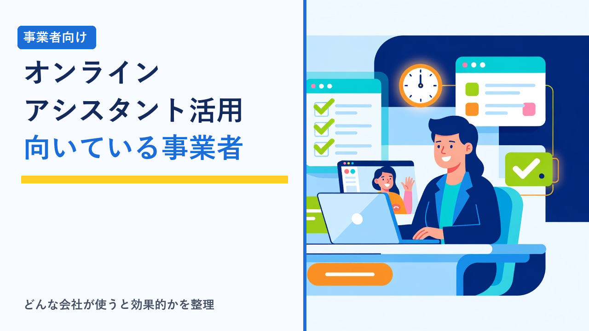
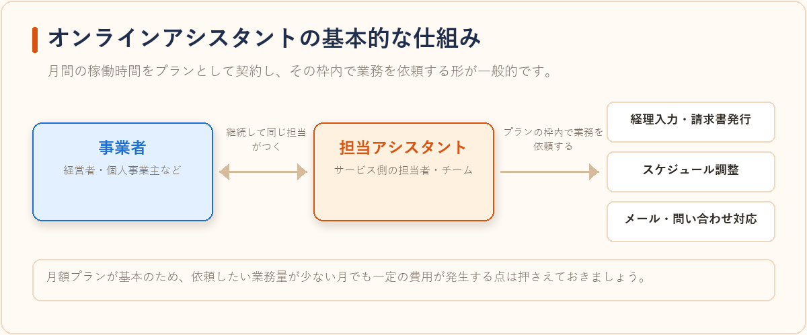
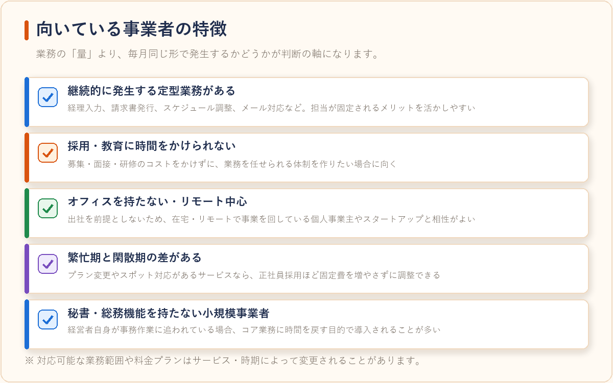
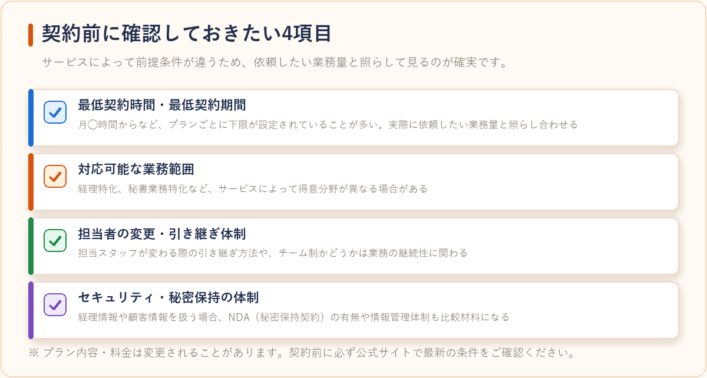

オンラインアシスタントサービスが向いている事業者の特徴
2026-08-05 更新

「フジ子さん」に代表されるオンラインアシスタントサービスは、経理・秘書業務・データ入力・リサーチといった事務作業を、オンライン上でスタッフに委託できる仕組みです。クラウドソーシングのように案件ごとに人を探す必要がなく、決まった時間枠の中で継続的に依頼できるのが特徴です。とはいえ、すべての事業者に向いているわけではありません。この記事では、どのような事業者・個人事業主に向いているのか、逆にどんな場合はクラウドソーシングの方が合っているのかを客観的に整理します。
オンラインアシスタントの基本的な仕組み
オンラインアシスタントサービスは、月間の稼働時間（例：月20時間、30時間など）をプランとして契約し、その枠内で依頼者が業務を発注する形式が一般的です。単発の案件ごとに人を探すクラウドソーシングと異なり、担当スタッフ（またはチーム）が継続してつくため、業務の背景や過去のやり取りを都度説明し直す必要が少ないというメリットがあります。一方で、月額制のプランが基本になるため、依頼したい業務量が少ない月でも一定の費用が発生する点は押さえておく必要があります。

向いている事業者の特徴
- 継続的に発生する定型業務がある：経理入力、請求書発行、スケジュール調整、メール対応など、毎月一定量発生する業務がある事業者は、担当が固定されるメリットを活かしやすい傾向があります。
- 採用・教育に時間をかけられない：アルバイトやパートを新規に雇うと、募集・面接・研修にコストがかかります。オンラインアシスタントはサービス側である程度の教育を経たスタッフが担当するため、立ち上げの手間を抑えたい事業者に向いています。
- オフィスを持たない・リモート中心の事業者：物理的な出社を前提としないため、そもそも在宅・リモートで事業を回している個人事業主やスタートアップと相性がよい仕組みです。
- 繁忙期と閑散期の差がある：プラン変更やスポット対応に対応しているサービスもあり、正社員採用ほど固定費を増やしたくない事業者にとって調整しやすい選択肢になります。
- 秘書・総務機能を持たない小規模事業者：一人社長や少人数チームで、経営者自身が事務作業に追われているケースでは、コア業務に時間を戻す目的で導入されることが多いようです。

逆にクラウドソーシングの方が合っているケース
一方で、次のようなケースはオンラインアシスタントよりも、案件ごとに発注できるクラウドソーシングの方が合っている場合があります。
オンラインアシスタントが向くケース
- 毎月一定量発生する定型業務がある
- 採用・教育に時間をかけられない
- 業務の背景を毎回説明し直したくない
クラウドソーシングが向くケース
- 単発・不定期の依頼がメイン。ロゴ制作や記事を数本だけ、など継続性のないスポット案件は都度発注型の方がコストを抑えやすい
- 専門性の高い特定スキルが必要。プログラミングやデザインなどをピンポイントで探すなら、スキル起点で人を探せる方が候補を見つけやすい
- 予算をできるだけ抑えたい。月額プランは一定の稼働時間分の費用が発生するため、依頼量が少なく不定期な場合は割高になることがある
クラウドソーシングとオンラインアシスタントの違いをより詳しく比較したい場合は、在宅ワーク・クラウドソーシングサービス比較もあわせてご覧ください。
依頼できる業務の目安
| 業務ジャンル | 具体例 |
|---|---|
| 事務・秘書代行 | メール対応、スケジュール調整、資料作成 |
| 経理サポート | 請求書発行、経費精算の入力、記帳補助 |
| リサーチ・データ入力 | 競合調査、リスト作成、データベース入力 |
| Web関連の軽微な作業 | SNS投稿の予約設定、簡単な画像加工、ブログ更新代行 |
※対応可能な業務範囲や料金プランはサービス・時期によって変更されることがあります。最新の内容は公式サイトでご確認ください。
選び方のポイント
- 最低契約時間・最低契約期間を確認する：月20時間からなど、プランごとに下限が設定されていることが多いため、実際に依頼したい業務量と照らし合わせて選びます。
- 対応可能な業務範囲を確認する：経理特化、秘書業務特化など、サービスによって得意分野が異なる場合があります。
- 担当者の変更・引き継ぎ体制を確認する：担当スタッフが変わる際の引き継ぎ方法や、チーム制かどうかは業務の継続性に関わるため事前に確認しておくと安心です。
- セキュリティ・秘密保持の体制を確認する：経理情報や顧客情報を扱う場合、NDA（秘密保持契約）の有無や情報管理体制も比較材料になります。

よくある質問
個人事業主でも契約できますか？
法人だけでなく、個人事業主やフリーランスを対象にしたプランを用意しているサービスも多くあります。契約条件はサービスごとに異なるため、公式サイトで対象範囲を確認することをおすすめします。
依頼する業務がない月はどうなりますか？
多くの場合、月額プランのため契約時間分の費用は発生します。依頼量に波がある場合は、プラン変更や一時休止に対応しているかどうかを事前に確認しておくと安心です。
クラウドソーシングと併用してもよいですか？
定型業務はオンラインアシスタントに任せ、専門性の高いスポット案件はクラウドソーシングで探すというように、目的に応じて併用している事業者も見られます。